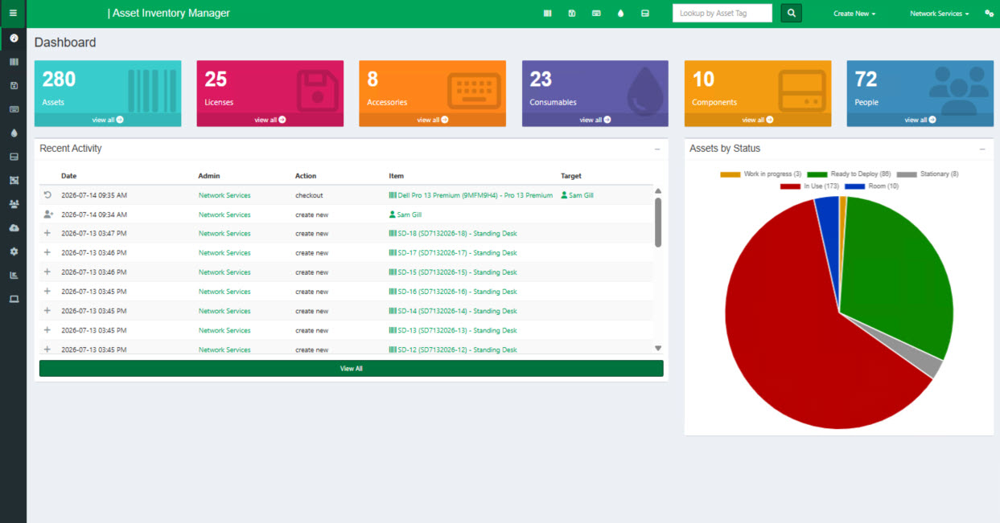
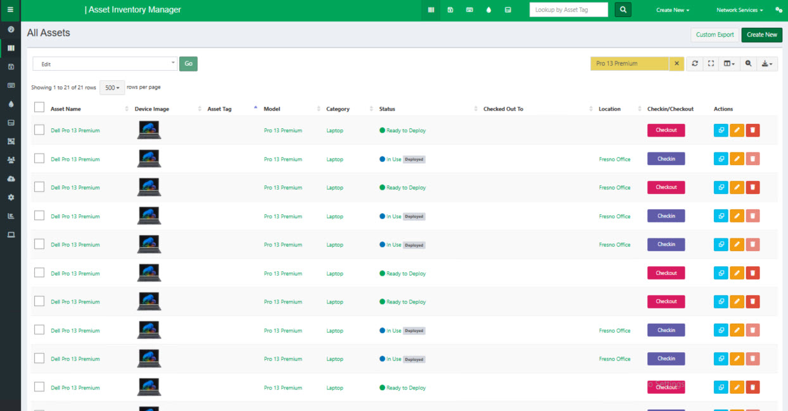
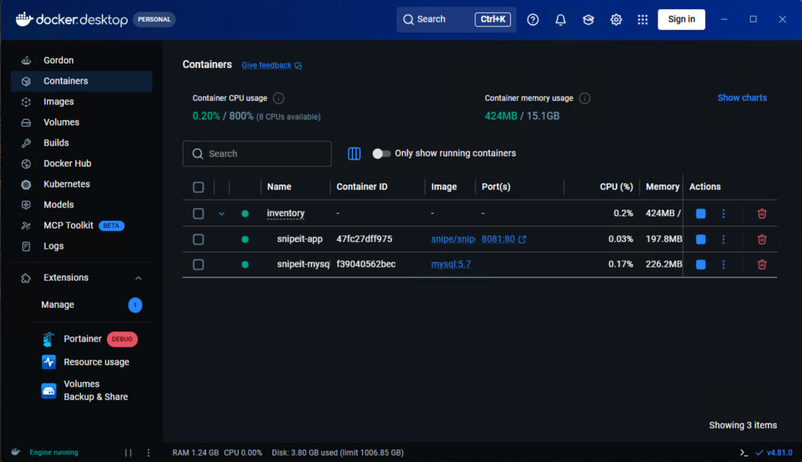

Docker · Snipe-IT · IT Asset Management
A self-hosted IT asset management system built on Snipe-IT and deployed with Docker, used to track computers, licenses, accessories, and equipment across the organization from a single dashboard — from checkout to retirement.



Centralized Asset Management
Provides a single platform for tracking and managing IT assets, including computers, peripherals, software licenses, mobile devices, and other inventory items throughout their lifecycle.
Improved Asset Visibility
Enables IT staff to quickly locate equipment, review assignment history, and maintain accurate inventory records, helping reduce lost or unaccounted-for assets.
Docker-Based Deployment
Runs within a Docker container, allowing the application and its dependencies to be packaged together in a consistent, portable environment.
Consistent Performance Across Environments
Containerization ensures that the Inventory Manager operates the same way regardless of the underlying server, simplifying deployment, upgrades, and troubleshooting.
Enhanced Scalability
Docker architecture allows the solution to be easily migrated, replicated, or expanded as inventory management needs grow.
Efficient Resource Utilization
Containers consume fewer system resources than traditional virtual machines, enabling the Inventory Manager to operate efficiently while maintaining performance.
Simplified Backup and Recovery
Configuration and inventory data can be managed independently from the application container, making backup, restoration, and disaster recovery processes more straightforward.
Open-Source and Cost-Effective
Built on the Snipe-IT platform, the solution delivers enterprise-grade inventory management without the licensing costs associated with many commercial asset management products.